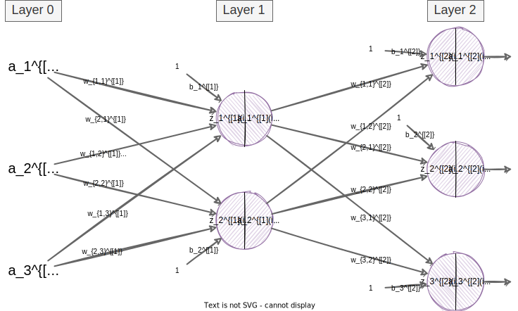

Goal: provide a concise walk-through of all fundamental neural network (including modern deep learning) techniques.
I will not discuss every possible analogy, angle, or topic here. Instead, I will provide links to external resources so that you can choose which topics you want to investigate more closely. I will provide minimal code examples when appropriate.
programming skills (I will show examples in Python)
familiarity with computing tools (primarily a command line interface (CLI))
2 Ethics
Being revised
3 Data
Perhaps the most important aspect of a neural network is the dataset. Let
\[
\mathcal{D} = \{X, Y\}
\]
denote a dataset comprising input features\(X\) and output targets\(Y\). Although \(X\) and \(Y\) can come in many shapes, I am going to be opinionated here and use a specific (and consistent) convention. Let’s use \(N\) to denote the size of the paired dataset. (Note, not all problems have output targets, but herein I am talking about supervised learning unless otherwise specified.)
We will frequently take a dataset and split it into examples used for training, validation, and evaluation. We’ll discuss these terms near the end of this section.
\(X\) is a matrix (indicated by capitalization) containing all features of all input examples. A single input example \(\mathbf{x}^{(i)}\) is often represented as a column vector (indicated by boldface):
where subscripts denote the feature index, \(n_x\) is the number of features, and the superscript \(i\) denotes that this is the \(i^{\mathit{th}}\) training example. We do not always put the input features into a column vector (see sec. 9 for more information), but it is the standard default.
Each row in \(X\) is a single input example (also referred to as an instance or sample), and when you stack all \(N\) examples on top of each other (first transposing them into row vectors), you end up with:
We transpose each example column vector (i.e., \(\mathbf{x}^{(i)T}\)) into a row vector so that the first dimension of \(X\) corresponds to the number of examples \(N\) and the second dimension is the number of features \(n_x\). Compare the column vector above to each row in the matrix. (This is not required, but it is the convention I will use for \(X\).)
Let’s denote matrix dimensions with \((r \times c)\) (the number of rows \(r\) by the number of columns \(c\) in the matrix). I will, in text and in code, refer to matrix dimensions as the “shape” of the matrix.
Question: What is the shape of \(X\)?
Answer: We say that \(\mathbf{x}^{(i)} \in \mathcal{R}^{n_x}\) (each input example is \(n_x\) real values) and \(X \in \mathcal{R}^{N \times n_x}\). Therefore, the shape of \(X\) is \((N \times n_x)\).
\(Y\) contains the targets (also referred to as labels or the true/correct/actual/expected output values). Here is a single target column vector:
Let’s use the MNIST dataset as an example. This dataset comprises a training partition including 60,000 images and a validation partition including 10,000 images. Each image is 28 pixels in height and 28 pixels in width for a total of 784 pixels. Each image contains a single handwritten digit—a number in the range zero through nine). Here is a small sample of these images:
MNIST Sample. Image from Wikipedia.Question: What is the shape of the training partition of the input \(X_{train}\)?
Answer:\(X_{train}\) is \((60000 \times 784\)): \[X = \begin{bmatrix}
x^{(1)}_{1} & x^{(1)}_{2} & \cdots & x^{(1)}_{784}\\
x^{(2)}_{1} & x^{(2)}_{2} & \cdots & x^{(2)}_{784}\\
\vdots & \vdots & \ddots & \vdots \\
x^{(60000)}_{1} & x^{(60000)}_{2} & \cdots & x^{(60000)}_{784}\\
\end{bmatrix}
\] The first row includes all 784 pixels of the first training image, and subsequent rows likewise contain pixel data for a single image.
Question: What is the shape of the training partition of the targets \(Y_{train}\)?
Answer:\(Y_{train}\) is \((60000 \times 10\)): \[Y = \begin{bmatrix}
x^{(1)}_{1} & x^{(1)}_{2} & \cdots & x^{(1)}_{10}\\
x^{(2)}_{1} & x^{(2)}_{2} & \cdots & x^{(2)}_{10}\\
\vdots & \vdots & \ddots & \vdots \\
x^{(60000)}_{1} & x^{(60000)}_{2} & \cdots & x^{(60000)}_{10}\\
\end{bmatrix}
\] Each row in this matrix is one-hot encoded, meaning that only one item in each row is “1” and all other items in a row are “0”. Here is an example of a one-hot encoding target for an input image representing the digit “2” \[y^T = \begin{bmatrix} 0 & 0 & 1 & 0 & 0 & 0 & 0 & 0 & 0 & 0\end{bmatrix}\] To save space we will often just represent a one-hot encoded vector using just the index of the “hot” item. For example, the previous vector can be represented by the integer 2.
Question: What are the shapes of \(X_{valid}\) and \(Y_{valid}\)?
Answer:\(X_{valid}\) and \(Y_{valid}\) are \((10000 \times 784)\) and \((10000 \times 10)\), respectively.
You might now wonder why we split a dataset into training/validation/evaluation partitions. It is reasonable to think that we would be better off using all 70000 images to train a neural network. However, we need some method for measuring how well a model is performing. We use the validation partition to measure performance.
If we measure performance directly on the training dataset we might trick ourselves into thinking that the neural network will perform very well when it is deployed as part of an application (for example, to convert a an image of someones’s handwritten notes into a text document), when in reality the network might only perform well specifically on the examples found in the training dataset.
Similarly, the evaluation partition is only used to compare performance after hyper-parameter tuning. We’ll discuss this more in sec. 12.
3.1 Loading MNIST Using PyTorch
1#!/usr/bin/env python 2 3fromtorch.utils.dataimportDataLoader 4 5fromtorchvision.datasetsimportMNIST 6fromtorchvision.transformsimportCompose,Normalize,ToTensor 7 8# Location in which to store downloaded data 9data_dir="../Data" 10 11# I used torch.std_mean to find the values given to Normalize 12# We will discuss normalization in section 4 13mnist_xforms=Compose([ToTensor(),Normalize((0.1307,),(0.3081,))]) 14 15# Load data files (training and validation partitions) 16train_data=MNIST(root=data_dir,train=True,download=True,transform=mnist_xforms) 17valid_data=MNIST(root=data_dir,train=False,download=True,transform=mnist_xforms) 18 19# Data loaders provide an easy interface for interactive with data 20train_loader=DataLoader(train_data,batch_size=len(train_data)) 21valid_loader=DataLoader(valid_data,batch_size=len(valid_data)) 22 23# This odd bit of code forces the train loader to give us all inputs and targets 24X_train, y_train=next(iter(train_loader)) 25X_valid, y_valid=next(iter(valid_loader)) 26 27# Let's start by simply printing out some basic information 28print("Training input shape :",X_train.shape) 29print("Training target shape :",y_train.shape) 30print("Validation input shape :",X_valid.shape) 31print("Validation target shape :",y_valid.shape)
This is slightly different than what we discussed. PyTorch expects us to use this dataset with a convolutional neural network. When we get to sec. 9 we’ll make more sense of this data format.
4 Single Neuron
When our model is a single neuron we can only produce a single output. So, \(n_y=1\) for this section. Sticking to our MNSIT digits example from above, we could train a single neuron to distinguish between two different classes (e.g., “1” vs “7”, “0” vs “non-zero”, etc.).
4.1 Notation and Diagram
Here is a diagram representing a single neuron (as we’ll see later, a neural network often refers to many of these neurons interconnected):
A neuron model with separate nodes for linear and activation computations.
The diagram represents the following equations (note that I removed the parenthesis superscript from the diagram to make it a bit easier to read):
\(x_k^{(i)}\) are the input features for the \(i^{th}\) example (e.g., \(k=76\) and \(i=7436\) would denote pixel 76 of 784 for image 7436 of 60000)
\(w_k\) (weights) and \(b\) (bias) are the learned parameters
\(z^{(i)}\) is a weighted sum of the input features plus the additional bias term
\(a^{(i)}\) is the output of a non-linear activation function \(g(\mathord{\cdot})\) applied to \(z^{(i)}\)
\(\hat y^{(i)}\) (pronounced “y hat”) is the label we often give to the output (\(a^{(i)} = \hat y^{(i)}\))
Question: Why do \(w_k\) and \(b\) not have superscripts?
Answer: The parameters \(w_k\) and \(b\) do not change as the input \(x_k^{(i)}\) changes. These parameters are the neuron, and they are used to produce the output \(\hat y^{(i)}\) for any given input; we use the same parameter values regardless of input.
For this model, we want to find parameters \(w_k\) and \(b\) such that the neuron outputs \(\hat y^{(i)} \approx y\) for any input. Before we discuss optimization we should take a moment to code up this single neuron model.
Before we continue I should show a more common representation of a neuron model. The image above separates the linear and activation components, but it is more common to show them together in a single node.
A neuron model.
4.2 Neuron with Python Standard Libraries
This code does not include any “learning” (i.e., optimization), but it is worth showing just how simple it is to write a single neuron from scratch. Most of the code below is necessary only to create some faked input data.
1#!/usr/bin/env python 2 3frommathimportexp 4fromrandomimportgauss 5 6 7defsigmoid(z:float)->float: 8"""The sigmoid/logistic activation function.""" 9return1/(1+exp(-z)) 10 11 12# The number of examples in our dataset 13N=100 14 15# Randomly generate some input data 16nx=4 17x1=[gauss(0,1)for_inrange(N)] 18x2=[gauss(0,1)for_inrange(N)] 19x3=[gauss(0,1)for_inrange(N)] 20x4=[gauss(0,1)for_inrange(N)] 21 22# Generate random neuron parameters 23w1=gauss(0,1) 24w2=gauss(0,1) 25w3=gauss(0,1) 26w4=gauss(0,1) 27b=0 28 29# Compute neuron output for each of the N examples 30forx1i,x2i,x3i,x4iinzip(x1,x2,x3,x4): 31zi=w1*x1i+w2*x2i+w3*x3i+w4*x4i+b 32ai=sigmoid(zi)
We compute \(z^{(i)}\) above using a summation, but we can express this same bit of math using the dot-product from linear algebra.
\[
z^{(i)} = \sum_{k=1}^{n_x} x_k^{(i)} w_k + b = \mathbf{x}^{(i)T} \mathbf{w} + b
\]
The \(\mathbf{x}^{(i)T} \mathbf{w}\) part of the equation computes the dot-product between \(\mathbf{x}^{(i)T}\) and \(\mathbf{w}\). We need to transpose \(\mathbf{x}^{(i)}\) to make the dimensions work (i.e., we need to multiply a row vector by a column vector).
This not only turns out to be easier to write/type, but it is more efficiently computed by a neural network library. The code listing below uses PyTorch to compute \(z^{(i)}\) (zi). Libraries like PyTorch and Tensorflow make use of both vectorized CPU instructions and graphics cards (GPUs) to quickly compute the output of matrix multiplications.
1 │ 1 │#!/usr/bin/env python 2 │ 2 │ 3 ││from math import exp 4 ││from random import gauss 5 ││ 6 ││ 7 ││defsigmoid(z: float) -> float: 8 ││"""The sigmoid/logistic activation function.""" 9 ││return1/ (1+exp(-z))│ 3 │import torch 10 │ 4 │ 11 │ 5 │ 12 │ 6 │# The number of examples in our dataset 14 │ 8 │ 15 │ 9 │# Randomly generate some input data 16 │ 10 │nx =4 17 ││x1 = [gauss(0, 1) for_inrange(N)] 18 ││x2 = [gauss(0, 1) for_inrange(N)] 19 ││x3 = [gauss(0, 1) for_inrange(N)] 20 ││x4 = [gauss(0, 1) for_inrange(N)]│ 11 │X = torch.randn(N, nx) 21 │ 12 │ 22 │ 13 │# Generate random neuron parameters 23 ││w1 =gauss(0, 1) 24 ││w2 =gauss(0, 1) 25 ││w3 =gauss(0, 1) 26 ││w4 =gauss(0, 1)│ 14 │w = torch.randn(nx) 27 │ 15 │b =0 28 │ 16 │ 29 │ 17 │# Compute neuron output for each of the N examples 30 ││for x1i, x2i, x3i, x4i inzip(x1, x2, x3, x4): 31 ││ zi = w1 * x1i + w2 * x2i + w3 * x3i + w4 * x4i + b 32 ││ ai =sigmoid(zi)│ 18 │for xi in X:│ 19 │ zi = xi @ w + b│ 20 │ ai =torch.sigmoid(zi)
The code snippet above shows a diff between the previous code snippet and an updated one using the dot product. You will see many diffs throughout this document. The key points are that: (1) red indicates text or entire lines that have been removed and (2) green indicates updated or newly added lines.
We do not need to transpose xi in code because when we iteration through X we get row vectors. As it happens, we can improve efficiency even further.
4.4 Vectorizing Inputs
In addition to using a dot-product in place of a summation, we can use a matrix multiplication in place of looping over all examples in the dataset. In the two equations below we perform a matrix multiplication that computes the output of the network for all examples at once. A neural network library can turn this into highly efficient CPU or GPU operations.
\[\begin{align}
\mathbf{z} &= X \mathbf{w} + b \\
\mathbf{a} &= g(\mathbf{z})
\end{align}\]
15 │ 15 │b =0 16 │ 16 │ 17 │ 17 │# Compute neuron output for each of the N examples 18 ││for xi in X: 19 ││ zi =xi@ w + b 20 ││ ai = torch.sigmoid(zi)│ 18 │z =X@ w + b│ 19 │yhat = torch.sigmoid(z)
Question: What are the dimensions of \(\mathbf{z}\) and \(\mathbf{a}\) (aka, \(\mathbf{\hat y}\))?
Answer: We are computing a single output value for each input, so, the shape of these vectors are \((N \times 1)\). PyTorch will treat these as arrays with \(N\) elements instead of as column vectors. \[\begin{align}
\mathbf{z} &= \begin{bmatrix}
\mathbf{x}^{(1)T} \mathbf{w} + b \\
\mathbf{x}^{(2)T} \mathbf{w} + b \\
\vdots \\
\mathbf{x}^{(N)T} \mathbf{w} + b \\
\end{bmatrix}
\\
\mathbf{a} &= \begin{bmatrix}
g(z^{(1)}) \\
g(z^{(2)}) \\
\vdots \\
g(z^{(N)}) \\
\end{bmatrix}
\end{align}\]
In the code snippet above, a matrix multiplication is indicated in PyTorch using the @ symbol (a * is used for element-wise multiplications). A key to understanding matrix math is to examine the shapes of all matrices involved. Above, \(X\) has a shape of \((N \times n_x)\), \(\mathbf{w}\) has a shape of \((n_x \times 1)\), and \(b\) is a scalar.
Inner dimensions (the last dimension of the left matrix and the first dimension of the right matrix) must be the same for any valid matrix multiplication. The scalar, \(b\), is added element-wise to every element in the final matrix due to broadcasting (this is a common library feature, not necessarily standard linear algebra).
So far, we have random parameters and we ignore the output. But what if we want to train the neuron so that the output mimics a real function or process? The next subsection tackles this very problem.
5 Multi-Layer Networks
A two-layer neural network.
Layer 0 is the input (formerly X)
Bracket superscript gives the layer
Parentheses superscript gives the example index (removed for readability)
Subscript gives neuron index, previous layer neuron index